基于 AI 智能的电商商品销售分析与预测系统
本项目面向电商企业内部运营与管理场景，围绕多维销售分析、 销量预测、库存建议、 异常预警、报表导出和后台管理， 设计并实现了一个前后端分离的商业智能平台原型。
8
前端页面
20+
后端接口
10
核心数据表
96/96
集成测试
前端页面概览
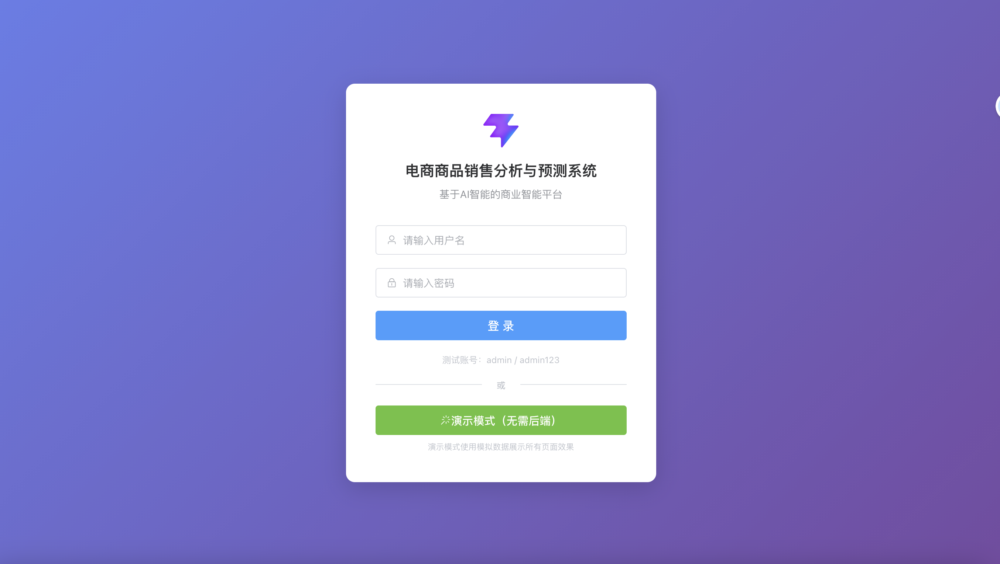
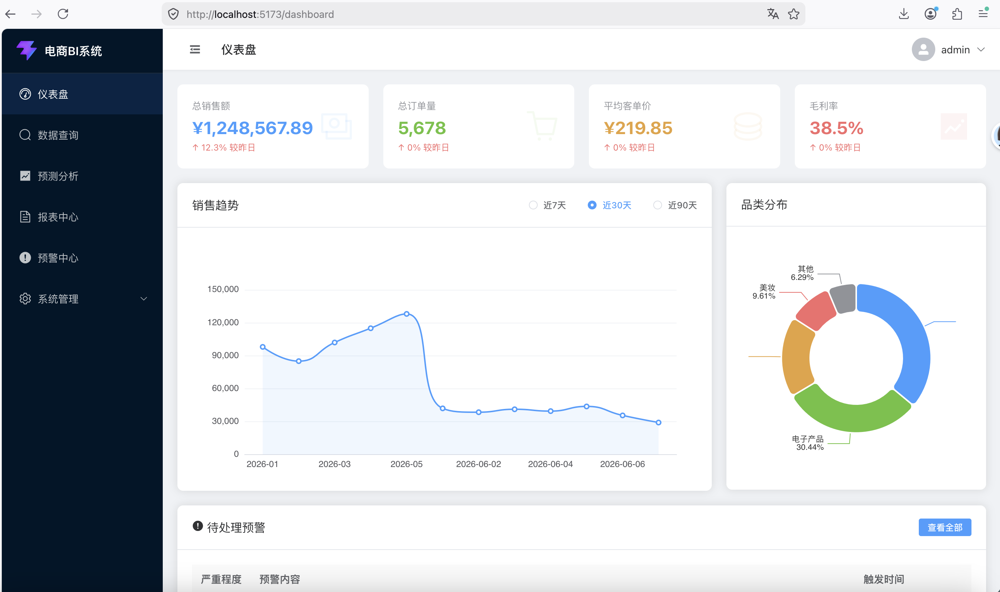
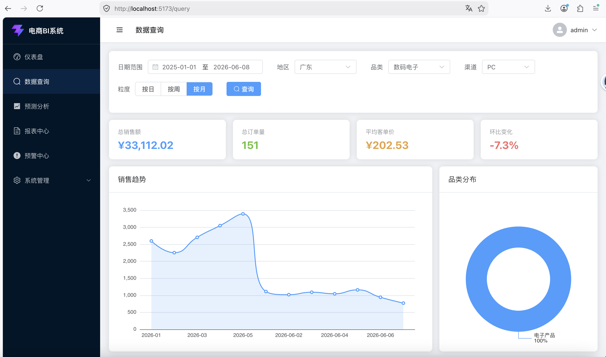
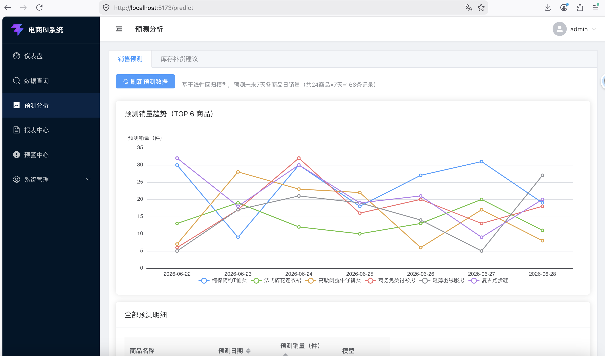
后端接口片段
认证：POST /api/auth/login
数据：GET /api/data/sales
预测：GET /api/predict/sales
预警：POST /api/alert/scan
管理：GET /api/admin/users
画像：GET /api/profile/users
核心数据表概览
user
category
product
customer
sales_record
user_profile
sales_forecast
alert_rule
alert_log
campaign
测试结果片段
test_auth_integration.py # 36 项
test_predict_alert_integration.py # 60 项
总计：96/96 通过
覆盖内容：
- 登录注册
- JWT 鉴权
- 销量预测
- 预警规则
- 日志处理
项目背景
回答“为什么要做这个系统”。
业务痛点
- 电商平台每天产生大量销售、商品、客户和库存数据。
- 单纯依赖人工查看报表，分析效率低，发现问题不够及时。
- 传统系统偏重数据记录，缺少预测和预警能力。
项目目标
- 实现多维度销售查询与可视化分析。
- 实现销量预测与库存补货建议。
- 实现异常检测、预警管理和报表输出。
应用价值
- 帮助运营经理更快掌握经营状态。
- 帮助分析师从历史数据中发现趋势。
- 帮助管理者进行数据驱动决策。
技术方案
采用前后端分离架构，前端负责交互展示，后端负责业务逻辑，数据库和算法层支撑分析与预测。
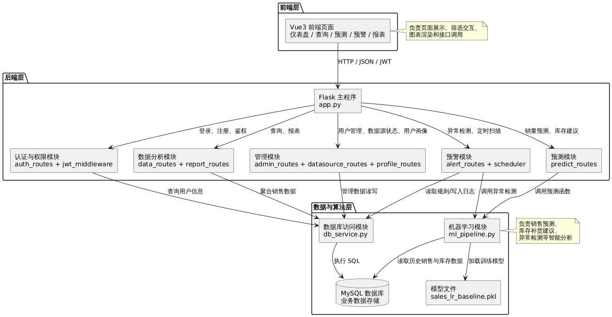
- 系统采用前后端分离结构，前端通过 HTTP/JSON 调用 Flask 后端接口。
- 后端负责认证、查询、预测、预警、报表和管理功能。
- 机器学习模块负责销量预测、库存建议与异常检测。
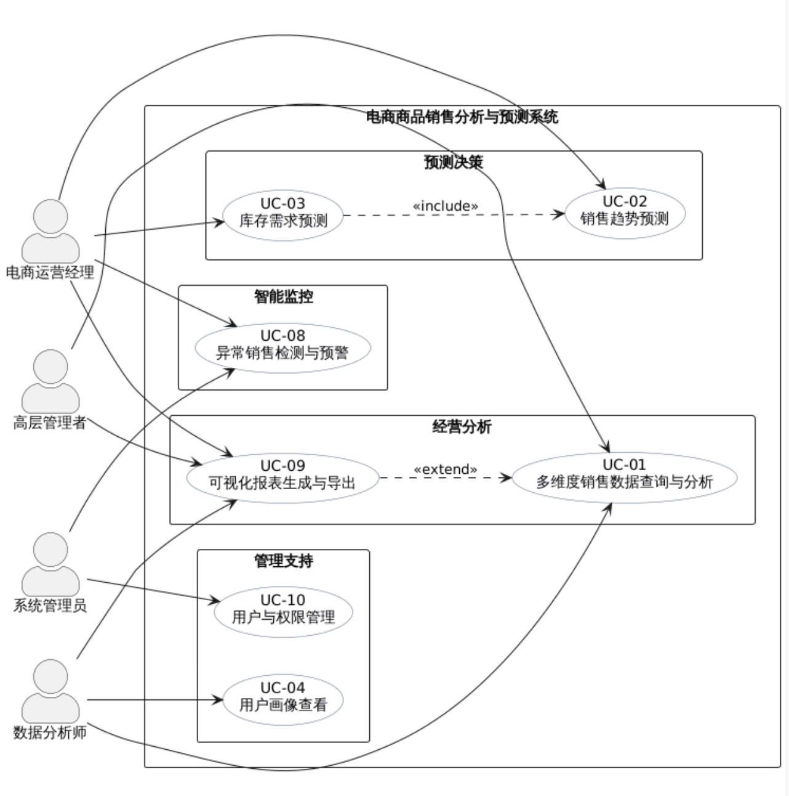
- 从需求视角看，系统面向电商运营经理、数据分析师、高层管理者、系统管理员四类角色。
- 核心能力覆盖数据查询、销量预测、库存建议、异常预警、报表导出和权限管理。
- 这一层更适合说明“系统为谁服务、解决什么问题”。
- 前端基于 Vue 3 + Vite + Element Plus + ECharts 实现。
- 负责页面展示、筛选交互、图表渲染与演示模式支持。
- 核心页面包括仪表盘、查询、预测、预警、报表和后台管理页面。
建议配图：13-frontend-layer.puml 导出图
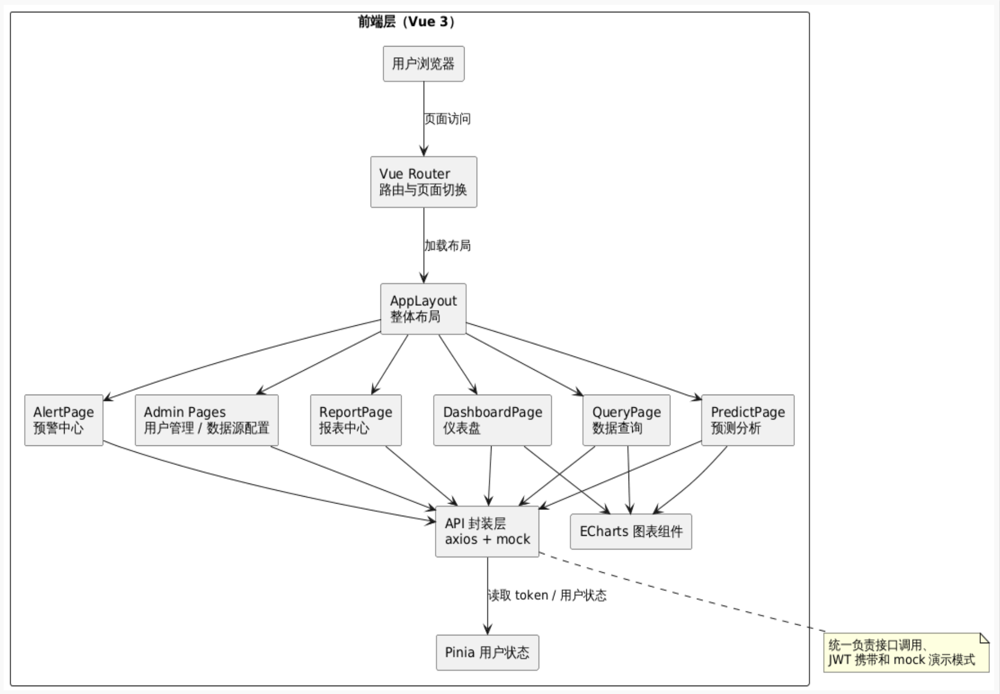
- 后端基于 Flask 实现，提供认证、查询、预测、预警、报表、管理等接口。
- 通过 JWT 实现登录状态维护和角色权限控制。
- 通过 APScheduler 实现定时预警扫描。
建议配图：14-backend-layer.puml 导出图
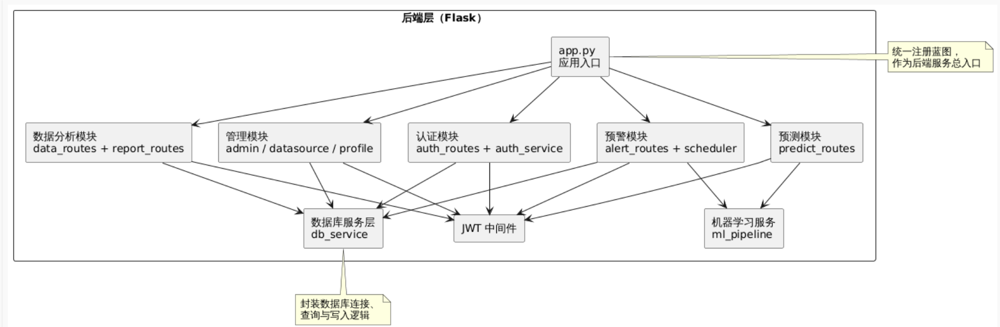
- 数据库采用 MySQL，围绕商品、客户、销售记录、预测结果、预警规则等建立 10 张核心表。
- 算法层基于 scikit-learn、pandas、numpy 实现销量预测、库存建议和异常检测。
- 训练模型文件与业务数据共同支撑系统智能分析能力。
建议配图：15-data-ml-layer.puml 导出图
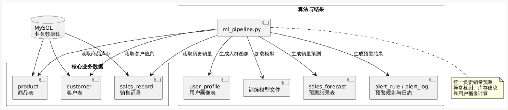
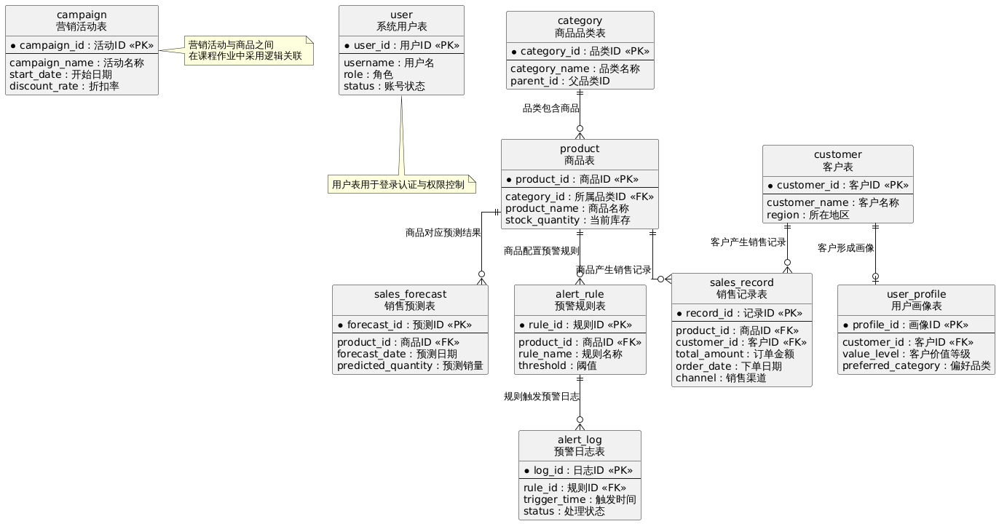
- 从数据视角看，系统围绕商品、客户、销售记录、预测结果、预警规则等核心实体组织。
- ER 图说明了数据表之间的关联关系，支撑分析、预测和预警功能。
- 这一层更适合说明“系统的数据基础是如何设计的”。
软件功能
通过标签切换展示系统的核心功能页面与对应说明。
登录与权限控制
系统提供登录页面作为统一入口，用户通过账号密码登录后进入系统。
- 支持 JWT 登录认证。
- 支持按角色进行权限控制。
- 支持演示模式，便于离线浏览和页面调试。
仪表盘与经营概览
仪表盘用于展示系统首页的经营状态，帮助用户快速了解业务总体情况。
- 展示总销售额、订单量、客单价等指标。
- 展示销售趋势图和品类分布图。
- 展示待处理预警概览。
多维销售数据查询
系统支持按业务维度对销售数据进行灵活筛选，体现 BI 分析能力。
- 支持按时间、地区、品类、渠道、粒度查询。
- 结果以图表和表格形式展示。
- 方便进行趋势分析和结构分析。
销量预测与库存建议
系统集成了机器学习模块，对未来销量进行预测，并给出库存补货建议。
- 预测未来销量变化趋势。
- 结合库存数据生成补货建议。
- 体现系统的智能分析能力。
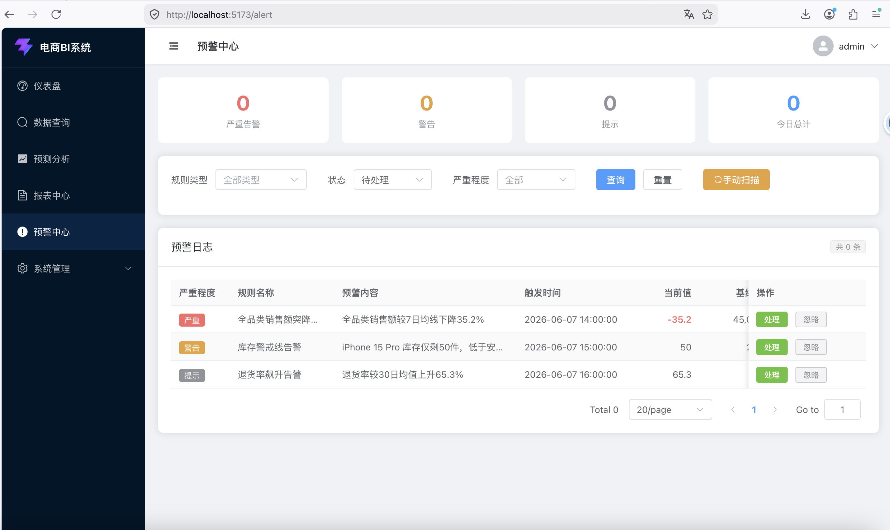
异常预警与风险监控
系统支持对异常销售和库存风险进行检测、记录与管理。
- 展示告警内容、严重程度和处理状态。
- 支持规则配置和定时扫描。
- 帮助管理者及时发现异常业务情况。
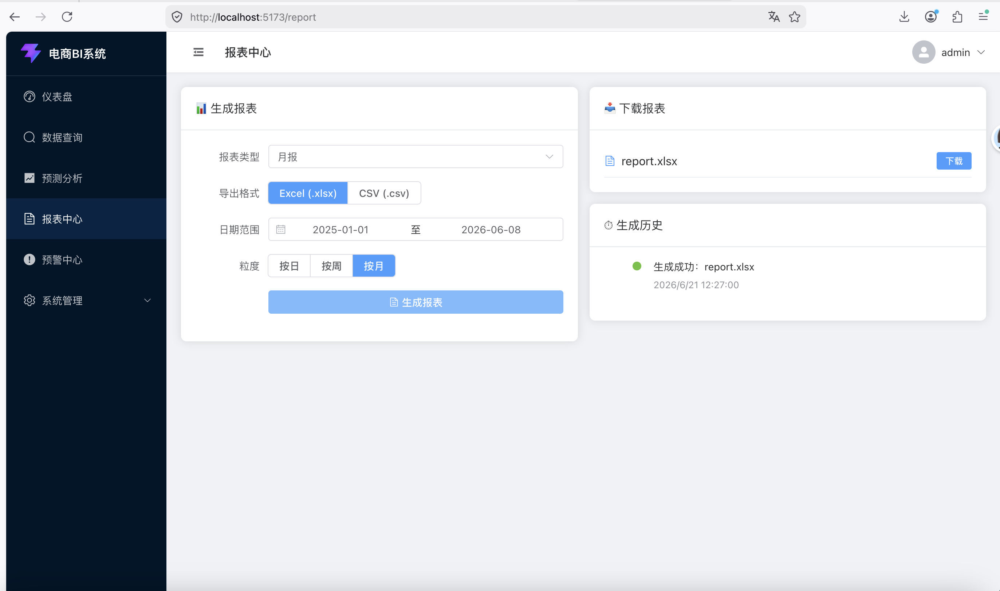
报表输出与后台管理
系统支持分析结果导出，并提供管理员视角的后台管理能力。
- 支持报表生成与导出。
- 支持系统管理、用户管理与数据源状态查看。
- 形成了较完整的软件系统结构。
任务分工
采用模块化分工方式推进项目，各成员围绕前端、后端、数据库、算法和展示测试协作开发。
严辰乐
组长 / 后端核心 / 项目管理
- 系统架构设计
- JWT 认证与权限控制
- 预测与预警集成
- 进度管理与文档把关
苏文韬
后端数据 / 数据库
- 数据库建模与脚本
- 查询与报表接口
- 随机数据生成脚本
闫维岳
前端管理页 / 测试 / 展示
- 登录、预警、管理页面
- 联调测试
- 展示材料整理
薛淞
ML 算法
- 销量预测
- 库存建议
- 异常检测
- 用户画像
姚凯曦
前端核心页面
- 仪表盘页面
- 查询、预测、报表页面
- 前端展示逻辑
项目管理方式
项目周期约两周，采用分阶段推进、里程碑控制、GitHub 协作和风险管理相结合的方式。
任务 / 时间
D1
D2
D3
D4
D5
D6
D7
D8
D9
D10
D11
D12
D13
D14
需求分析文档
软件设计文档
后端框架与认证
数据库建模与脚本
前端核心页面
预测与预警模块
测试与修复
演示材料与最终提交
M1 需求分析定稿
Day 3
M2 代码骨架就绪
Day 3
M3 P0 功能完成
Day 8
M4 测试完成
Day 12
M5-M6 提交完成
Day 12-14
M1：需求分析定稿。完成需求文档梳理，统一系统目标、角色和核心用例。
成员感想
点击成员卡片可查看个人体会摘要，保留约 150 字展示，其余内容以省略号处理。
严辰乐
组长 / 后端核心 / 项目管理
负责后端核心与项目统筹，更强调接口一致性、流程管理与系统集成质量。
苏文韬
数据库设计 / 后端数据层
负责数据库和查询导出接口，体会到接口先行与可靠性优先的重要性。
闫维岳
展示整理 / 前端协作
关注展示表达、AI 辅助与 HTML 交互相对传统 PPT 的优势。
薛淞
ML 算法
负责预测与分析模块，更强调算法落地中的业务理解与工程化思维。
姚凯曦
前端开发（管理页面）+ 测试 + 文档
负责管理页面、测试与文档，强调工程化前端与测试的重要性。
作为组长，我同时承担项目管理与后端核心开发工作，负责 Flask 框架搭建、JWT 认证、预测与预警 API、定时调度，以及 8 条 P1 路由开发。联调阶段最深的体会来自接口文档滞后带来的问题：路径、请求方法和返回字段一旦不同步，就会迅速放大集成成本。这次实践让我更清楚地认识到，组长的价值不仅是多写代码，更在于建立流程、统一文档、拦截错误，并确保团队最终交付的是一个真正集成的系统......
总结
以一句话收束系统价值和软件工程过程价值。
本项目围绕电商运营场景，完成了一个集数据分析、销量预测、
库存建议、异常预警和报表导出于一体的 BI 系统原型。
它不仅实现了核心功能，也体现了需求分析、系统设计、模块分工、版本协作和项目管理
等软件工程过程。后续如果继续迭代，可以进一步接入真实数据源，并优化预测模型和自动化管理能力。